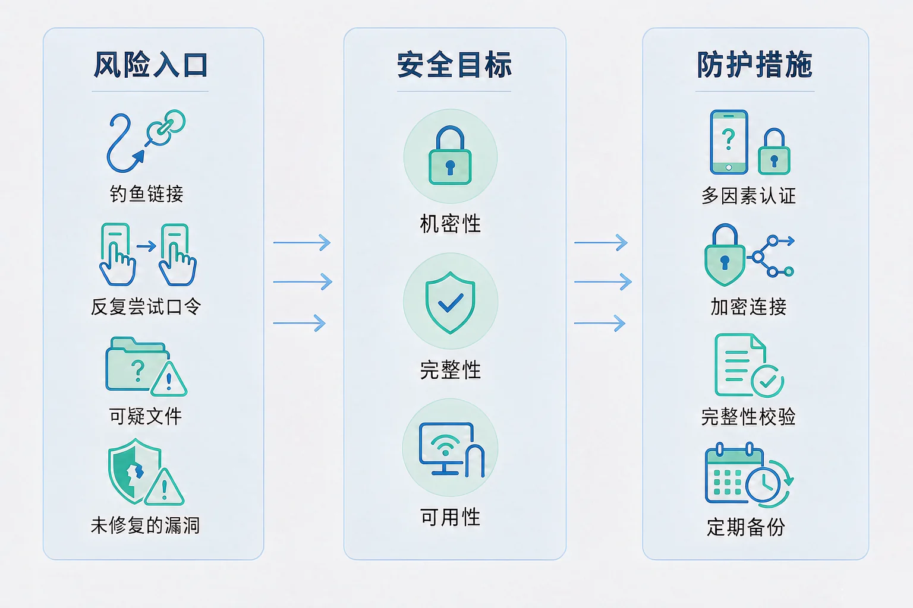
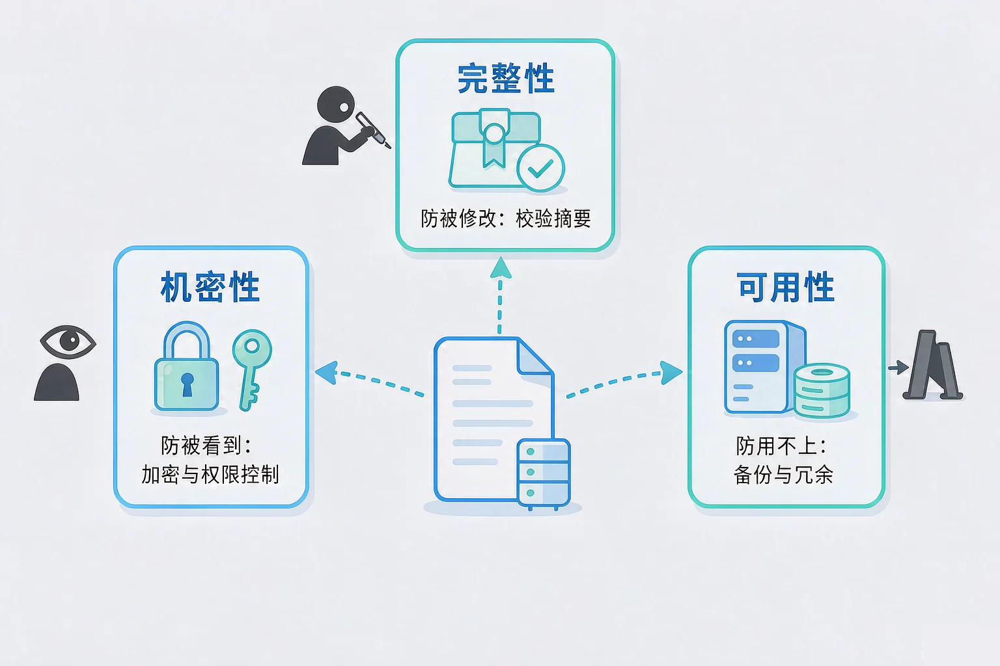
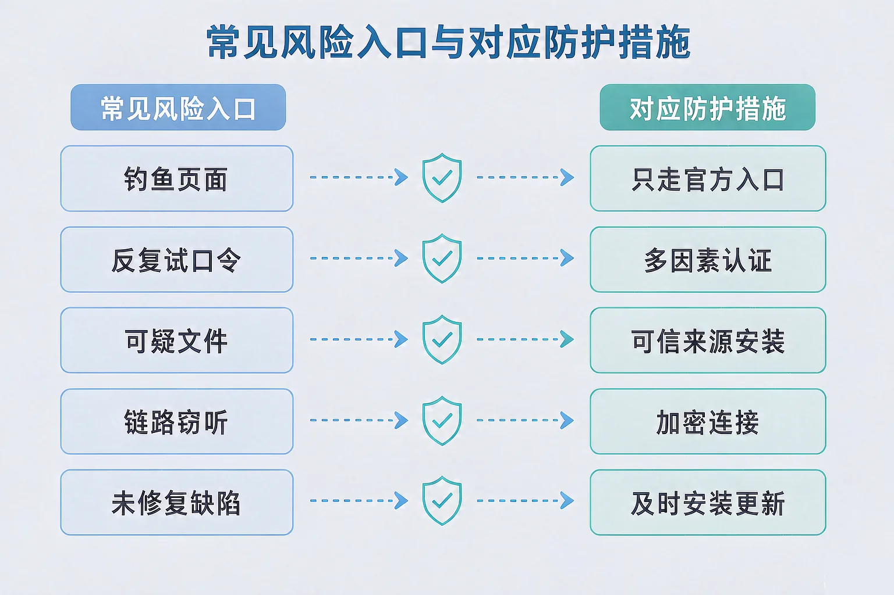

Gallery
v1.0.0 · skill v7.22.0
初中八年级 · 信息安全
一个账号在深夜被人登录，本人却什么都没做——数据是在哪一步丢掉的？

选一个你真正好奇的问题，后面的实验都会围着它转。
选择或输入后，这节课会围绕你的问题展开。
先凭直觉选一个，选完立刻看到解释——错了也没关系，正好知道要重点听哪里。
1. 下面哪一件事属于「保护数据的完整性」？
完整性针对的是「有没有被改动」，机密性针对「谁能看」，可用性针对「能不能用上」。错因提醒：这三个目标最容易搞混，判断的关键是问一句：这条措施防的到底是「被别人看到」、「被别人改」还是「用不上」。
2. 一个口令由 8 位小写字母组成，另一个由 12 位小写字母组成。关于它们的搜索空间，正确的说法是：
搜索空间是「字符种类数的位数次方」，多一位就乘以一次底数。错因提醒：同学常误认为「多几位只是多一点点」，把加法直觉套到指数上——这里差的不是 4，而是 26 的四次方。
3. 在公共场所的开放无线网络上登录账号，最需要警惕的是：
开放网络里，旁路截获的可行性明显更高——所以要用加密连接。错因提醒：常见错误是只盯着「快不快」，把传输安全当成性能问题。
为什么要学这一课？你已经知道数据可以采集、传输、存储，也用过各种在线服务。但你有没有想过：数据在存储、传输、使用的每一个环节，都可能被人盯上。所以我们需要先给「安全」下可检验的定义——否则就只能靠感觉说「我觉得这样比较安全」，而感觉是没办法验证的。
信息安全有三个基本目标：机密性（只有该看到的人才能看到，靠加密与权限控制实现）、完整性（数据没有被偷偷改动，靠校验摘要来发现）、可用性（需要的时候能用得上，靠备份与冗余来保障）。
① 机密性
防「被看到」。靠加密和权限控制实现。
② 完整性
防「被改」。靠校验摘要及时发现改动。
③ 可用性
防「用不上」。靠备份和冗余撑住。

🔍 深层理解 换个角度再看一遍这件事，看看能不能说出背后的原理。
看见它：同一份数据，在一台没人管的终端上和在加密、有权限、有备份的环境里，面对的风险完全不同——安全是环境的属性，不只是数据自己的属性。
比较它：加密是为了防止别人看懂，摘要校验是为了防止别人改完不认账。一个管「看不懂」，一个管「改不了瞒得住」，不能互相替代。
迁移它：快递要密封（机密性）、要有封条和重量校验（完整性）、还要保证按时送达（可用性）——思路完全一样。
先选口令用到的字符种类，再拖长度，观察搜索空间、熵和估算时长怎么变。
风险不是抽象的，它总是从某个具体的入口进来。把入口找出来，防护措施才有地方可放；找不到入口的防护，多半只是心理安慰。

最容易犯的两个错：一是误认为口令足够复杂就万事大吉——钓鱼和撞库根本不靠猜，所以多因素认证不是可选项；二是搞混「加密」与「完整」——加密只让内容看不懂，挡不住别人把内容改掉，要发现改动还得靠完整性校验。另外要接受一件事：没有绝对的安全，只有把风险降到可以接受的程度。
选一条传输通道，再决定要不要加密、要不要做完整性校验，然后发送并观测。
题目：某同学的账号在深夜被异地登录。请分析可能的入口，给出处置步骤和加固方案。
不少同学误认为「账号被盗一定是被破解了密码」，于是只想着换一个更复杂的口令。但钓鱼和撞库根本不靠猜——如果入口是钓鱼页面，再长的口令也是自己交出去的，这时候唯一能救场的是多因素认证。另一处容易搞混的是把「改口令」当成处置的全部：没有退出其他设备的登录、没有检查第三方授权，攻击者手里的凭据可能依然有效。
先凭直觉选一个，选完立刻看到解释——错了也没关系，正好知道要重点听哪里。
1. 下面哪句话是正确的？
机密性与完整性防的是两件事：一个防「被看到」，一个防「被改」。错因提醒：最常见的是误认为加密顺带把完整性也解决了；实际上加密之后内容依然可能被替换成另一段合法密文。
2. 一个口令由 10 位构成，只用数字；另一个由 8 位构成，使用小写字母加数字。关于它们的搜索空间，正确的是：
要分别算底数的位数次方，再比较量级：10¹⁰ ≈ 1×10¹⁰，36⁸ ≈ 2.8×10¹²。错因提醒：容易只盯着字符种类下结论，忘记长度在指数位置上——这正是这一课要纠正的加法直觉。
3. 关于「防护措施」，下面哪种判断最站得住脚？
防护要有针对性：措施与路径一一对应，才是有效配置。错因提醒：常见错误是把安全当成「堆措施」——开了一堆按钮却挡不住任何一条实际路径，只是增加了操作负担。
场景：同学甲的日常设备要长期使用，目前四项防护都没有开。请决定开启哪几项，然后点评估。
① 已识别的攻击路径
② 可开启的措施
写下来，说给同桌听：如果只允许开一项措施，你会开哪一项？请说明理由，以及它没能覆盖的那几条路径你打算怎么处理。
先凭直觉选一个，选完立刻看到解释——错了也没关系，正好知道要重点听哪里。
1. 一位同学在图书馆的开放无线网络上要提交一份资料。下面哪种做法最合理？
开放网络旁路截获的可行性更高，所以传输过程必须加密。错因提醒：常见错误是误认为「换个时间提交」就等于安全了；只要在未加密的页面上提交，风险始终存在。
2. 一台设备长期提示有安全更新但没有安装。主要风险是：
未修复漏洞是五条常见入口之一，而且它的特点是被公开过、利用方式明确。错因提醒：很多同学把安全更新当成「性能优化」，误认为它只影响速度，其实它补的是可被利用的缺陷。
3. 小李说：「我的口令有 16 位，非常强，所以不需要开多因素认证。」这个说法的问题在于：
口令强度和身份认证是两个层面：前者让「猜」变难，后者让「拿到口令也不够用」。错因提醒：把强度当成万能，是这一课最需要纠正的想法。
回到开头那个深夜被登录的账号：如果当初开了多因素认证，即使口令已经泄露，攻击者也还差一步，那次登录就不会成功。整个防护过程里没有一步是神秘的——每一项措施都对应着一条明确的攻击路径。
给别人讲一遍：请用「机密性、完整性、可用性」三个词，再挑两条攻击路径，说清楚这个场景里应该配哪些措施、为什么配它们。
三层练习，做完第一、二层就算通关；第三层留给愿意继续探索的同学。
⭐ 基础巩固（必做）
⭐⭐ 能力应用（必做）
⭐⭐⭐ 迁移挑战（选做）
左边是学它之前要先会的，右边是学会之后可以继续探索的，下面是同一领域的伙伴知识。
图谱正在加载：首次进入需下载知识索引（约 1–3 秒），加载完成后本行会自动消失。